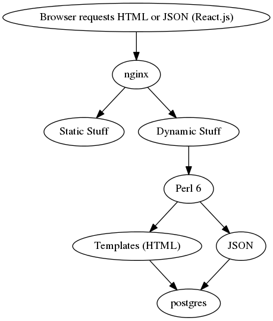

Utiaji
Building an Application Specific Web Server in Perl 6Brian Duggan
bduggan
bduggan@matatu.org
We craft software for companies that care about the details.
+ layer of abstraction for the webserver
+ focus on application rather than HTTP
+ handle aspects of performance, security
+ easy to add plugins
+ convenient to add hooks
+ provide relevant primitives
- plugin architectures
- plugin ecosystems
- DSLs
- vendor lock-in
- maintenance cost
- major version upgrades require rewrites
- framework architecture impacts application architecture+ implement a lot of HTTP
+ Have many features
+ Highly optimized
- Also have specific APIs
- Very complicated
- Have maintenance costs
1991 version 0.9
1996 HTTP/1.0 (RFC 1945)
1999 HTTP/1.1 (RFC 2616)
2014 HTTP/1.1 updates (RFC 7230, 7231, 7232, 7233, 7234, 7235)
2015 HTTP/2https://www.w3.org/Protocols/HTTP/AsImplemented.html
This restricted protocol is very simple and may always be used when you do not need the capabilities of the full protocol which is backwards compatible.-- Tim BL
Outline
- 0. Introduction
- 1. The Application: Utiaji
- 2. The Language: Perl 6
Utiaji
- What and Why
- How
- Bare Necessities
Calendar✓, Wiki✓, Address Book•
- History
- 2005 yacal.sf.net. CGI.pm, Data::Dumper
- 2006: Wiki, Addressbook, etc
- 2011: Rewrite: Mojolicious, JQuery, Redis
- 2012: Google Calendar, Amazon Glacier
- 2016: Perl 6, React.js, Postgres 9.5 (JSON)
- Goals
- Minimize maintenance
- Customize quickly
- Highly reliable
- Judicious use of shiny new tech
Architecture
Data Model
create table kv (
k varchar not null primary key, /* key */
v jsonb, /* value */
t timestamp default current_timestamp
);
create table kk (
f varchar references kv(k) on delete cascade, /* from */
t varchar references kv(k) on delete cascade, /* to */
primary key (f,t)
);Requirements
- Handle GET of HTML
- HTML Templates
- Handle GET and POST of JSON
- Serializing to JSON
- Socket operations
- Routing
- Modeling data
- Database Access
Perl 6
- Grammars
- Concurrency
- Syntax
- Types
- Caveats
Grammars
- Request Line
- Headers
- Templates
- Route Patterns
Request Lines
GET /cal HTTP/1.1
RequestLine.pm6
rule TOP { <verb> <path> "HTTP/1.1" }
token path { '/' <segment>* %% '/' }
token segment { [ <alpha> | <digit> | '+' | '-' | '.' | ':' ]* }
Headers
Host: utiaji.org
Content-Length: 0
Headers.pm6
rule TOP { [ <header> \n ]* }
rule header { <field-name> ':' <field-value> }
Templates
%| :$cal, *%args
%== include $app, 'header', |%args;
<row>
<div class="column" id='content'></div>
<script type='text/javascript'>
var state = <%== to-json($cal.initial-state) %>;
Template.pm6
rule TOP {
[ ^ '%|' [ $<signature>=[ \V+ ] ] \n ]?
[ <line=statement>
| <line=text>
] *
}
Route Patterns
/cal
/wiki/:page
/cal/range/Δfrom/Δto
Pattern.pm6
token TOP { '/' <part> *%% '/' }
token part { <literal> || <placeholder> }
token placeholder { <placeholder_word> | <placeholder_date> }
token placeholder_date { 'Δ' <var> }
token placeholder_word { ':' <var> }
Concurrency
A supply generates a sequence of values.To tap a supply, use tap or react + whenever.
my $gatsby = Supplier.new;
# version 1
$gatsby.Supply.tap(
{ say "got $_" },
done => { say "bye" },
quit => { say "quitting: $_"} );
$gatsby.emit('wine');
$gatsby.quit("Argh!");
$gatsby.done;
my $gatsby = Supplier.new;
# version 2
start react whenever $gatsby.Supply
{ say "got $_";
LAST { say "bye" }
QUIT { say "quitting: $_" }
}
$gatsby.emit('wine');
$gatsby.quit("Argh!");
$gatsby.done;
my $gatsby = Supplier.new;
start react whenever IO::Socket::Async.listen($.host,$.port) {
self.handle-connection($^connection);
QUIT { debug "socket quit"; }
LAST { debug "socket done"; }
}
sub handle-connection {
whenever $conn.Supply(:bin) {
if self.generate-response($bytes,$^buf) { ... }
QUIT { debug "connection quit"; }
LAST { debug "connection done"; }
}
}
Promises
my $timeout = Promise.in(5).then({
$connection.close unless $closed;
});
Numeric Parameters
self.render: $res, status => 404self.render: $res, :status<404> self.render: $res, :404statusImplicit Parameters
sub handle($req,$res) {
self.render($res, text => "hello, { $req.json<name> }")
}sub ($req,$res) {
self.render: $res, text => "hello, { $req.json<name> }"
}-> $req,$res { self.render: $res, text => "hello, { $req.json<name> }" }{ self.render: $^res, text => "hello, { $req.json<name> }" }Signature Objects
$cb.signature.count == 1 ?? $cb($res) !! $cb($req,$res);$cb.count == 1 ?? $cb($res) !! $cb($req,$res);Multi-dispatch
multi method render($res, :$text!, :$status=200) {multi method render($res, :$json!, :$status=200) {multi method render($res, :$template!, :$status=200) {multi method render($res, Pair $p) {Topicalizing
$_ = $dog;given $dog { ...with $dog { ...for $dog { ....barkMatch Object ($/)
$/{"day"}$/<day>$<day>No DSL
(or instant DSL)method setup {
with self {
.get: '/', { self.redirect_to: $^res, '/wiki' }
.get: '/cal/range/Δfrom/Δto', -> $req, $/
{ ...$<from>...$<to>... }
.post: '/cal/', { ...$^req...$^res...}
...
}
Types
my Buf $buf = Buf.new(65,66,67);my Buf[uint8] $buf = Buf[uint8].new(65,66,67);my Str $body = $buf.decode('UTF-8');my UInt $content-length = $body.encode('UTF-8').elems;Object Hierarchies
unit class Utiaji::App;
has $.router handles <get post put> = Utiaji::Router.new;Object Hierarchies
class Utiaji::Model::Pim { .. }Set Operations
for ( @new (-) @old ).keys { ...save... }
for ( @old (-) @new ).keys { ..remove.. }method !header_valid(Buf[] $header) {
return $header ⊂ (10,13,32..127);
}⚠️ Rakudo to-json
say to-json( "üç∫")
"\u1f37a"
use JSON::Fast;
say to-json( "üç∫")'
"üç∫"
⚠️ Single Argument R ule
say [ { a => 1 } ] eqv [ a => 1 ];
say [ { a => 1 }, ] eqv [ a => 1 ];
True
FalseTesting
.travis.yaml
cache:
directories:
- $HOME/.rakudobrewdependencies:
cache_directories:
- ../.rakudobrewpanda --notests install DBIish
panda install HTTP::TinyishWishlist
- Better dependency management
- Coercion (dates to strings, matches to strings)
- leave
$ perl6 -e '{leave}'
leave not yet implemented. Sorry.
in block at -e line 1 Thank you
Brian Dugganutiaji.org
github.com/bduggan/utiaji